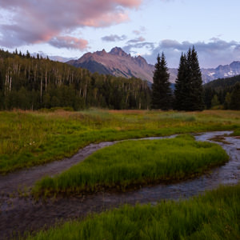

Soda Springs Town
Weather Summary
Currently:
Current:
Wind Chill:
Humidity:
Wind Speed:
5 Day Forecast
| day1 | day2 | day3 | day4 | day5 |
|---|---|---|---|---|

|
|
|
|
|
SODA SPRINGS INFORMATION
The city is named for the hundreds of natural springs of carbonated water that are located in and around the city. The springs were well known to Native Americans and were a famous landmark along the Oregon Trail in the middle 19th century. Today the city is also known as the location of the Soda Springs Geyser, which was unleashed in 1934 when "town fathers" were looking for hot water for a "hot pool" bathing attraction.

CONTACT INFORMATION
☉ Name: David Tabi
☏ Email: todayweather.live
✉ Phone : 593-455-5433